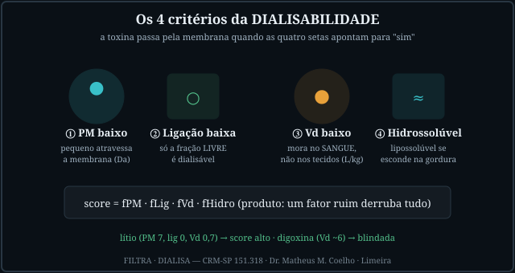
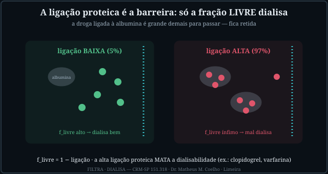
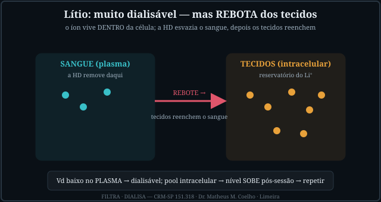
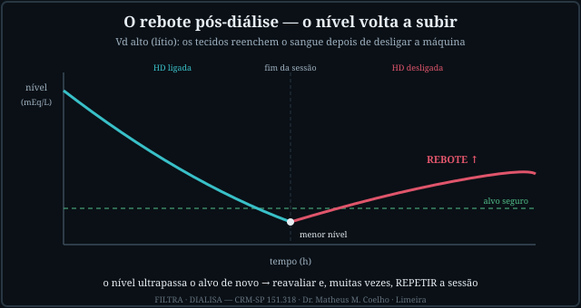
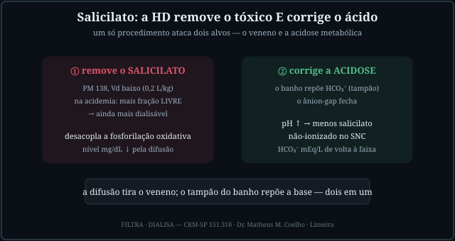
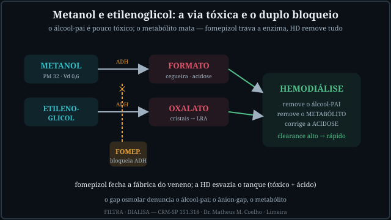
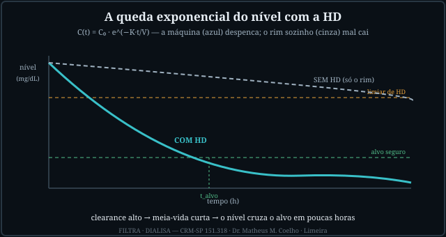
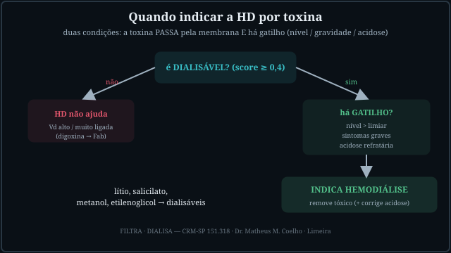

A dialisabilidade é física, não tabela. Quatro propriedades decidem
se a membrana remove a toxina; depois, o nível e a gravidade decidem se vale dialisar; por fim, o Vd decide se o
nível vai rebotar. As Fig. 1–8 voltam no Caso, na Trilha e na Avaliação. Atribuição em
CREDITS.md (em curadoria).
Pense na membrana como uma peneira fina. PM baixo atravessa; pouca ligação proteica deixa a droga livre (a ligada à albumina é grande demais); Vd baixo mantém a toxina no sangue — o único compartimento que a máquina alcança; e hidrossolúvel não se esconde na gordura. O score sai do produto dos quatro: um fator ruim derruba tudo.


O lítio é o caso-modelo: PM 7, ligação zero, Vd 0,7 L/kg → score altíssimo. A HD esvazia o sangue depressa. O problema é o pool intracelular: o íon vive dentro da célula, e quando a máquina desliga os tecidos reenchem o sangue → o nível (mEq/L) sobe de novo. Por isso o lítio pede reavaliar o nível pós-sessão e, com frequência, repetir.


Estes três geram acidose metabólica. A HD é dupla: tira a toxina e repõe tampão (HCO₃⁻ do banho) — o ânion-gap fecha. No salicilato, a acidemia ainda joga mais droga para a forma livre, aumentando a remoção. No metanol e no etilenoglicol, o álcool-pai é pouco tóxico; o metabólito (formato, oxalato) é que mata — o fomepizol bloqueia a álcool-desidrogenase e fecha a fábrica do veneno, enquanto a HD esvazia o tanque.


Removida a toxina dialisável, o nível cai exponencialmente: C(t) = C₀·e^(−K·t/V), com K = clearance da máquina + clearance endógeno (mL/min) e V o volume de distribuição (Vd·peso). Clearance alto → meia-vida curta → o nível cruza o alvo seguro em poucas horas. O rim sozinho mal arranha a curva. Isso é o que faz da HD o antídoto rápido.

Indicar a HD por toxina exige duas condições. Primeiro: a toxina é dialisável (score ≥ 0,4)? Se não — Vd alto ou muito ligada, como a digoxina — a máquina não ajuda (trata-se com antídoto específico, p.ex. Fab antidigoxina). Se sim: há gatilho — nível acima do limiar, sintomas graves, ou acidose refratária? Então dialisa: remove o veneno e, quando aplicável, corrige o ácido.

Emergência. Cinco quadros. A pergunta de cada um: essa toxina dialisa? Indica HD? Vai rebotar? Volte às Fig. 1, 3, 6 e 8: a física decide.
Quatro propriedades: PM baixo (atravessa a membrana), baixa ligação proteica (só a fração livre passa), Vd baixo (mora no sangue) e ser hidrossolúvel. O score é o produto — um fator ruim derruba tudo (Fig. 1).
A droga ligada à albumina vira um complexo grande demais para cruzar a membrana. f_livre = 1 − ligação. Ligação alta (≥85%) praticamente anula a remoção, mesmo com PM e Vd favoráveis (Fig. 2).
Vd alto significa que a toxina está nos tecidos, não no sangue. A máquina só alcança o compartimento sanguíneo; pouca droga lá → pouca removida, mesmo com clearance alto. É o caso da digoxina (Vd ~6 L/kg).
É muito dialisável (PM 7, ligação 0, Vd 0,7). Mas o íon é intracelular: ao desligar a máquina, os tecidos reenchem o sangue → o nível (mEq/L) rebota (Fig. 3/4). Reavaliar pós-sessão e repetir.
Além de remover a toxina, o banho repõe HCO₃⁻ (tampão): o ânion-gap fecha. No salicilato, a acidemia ainda solta mais droga (mais livre → mais removível). Dois alvos, um procedimento (Fig. 5).
Bloqueia a álcool-desidrogenase (ADH) — a enzima que converte o álcool-pai no metabólito tóxico (formato, oxalato). Trava a fábrica do veneno; a HD esvazia o tanque já formado (Fig. 6).
Exponencialmente: C(t) = C₀·e^(−K·t/V), K = clearance total (mL/min), V = Vd·peso. Clearance alto → meia-vida curta → o nível cruza o alvo em poucas horas (Fig. 7). O rim sozinho mal arranha a curva.
Duas condições: a toxina é dialisável (score ≥ 0,4) E há gatilho — nível acima do limiar, sintomas graves, ou acidose refratária. Sem dialisabilidade, a máquina não ajuda, por mais grave que seja (Fig. 8).
A HD age como um antídoto físico: por difusão remove o veneno e por tampão repõe a base. O meio interno (eletrólitos, ácido-base, escórias) volta à faixa — não porque o rim funcionou, mas porque a física substituiu a depuração que faltava.
Os controles do Lab movem estas curvas. Eixo horizontal = tempo (min/h); eixo vertical = nível da toxina (na unidade dela). A curva azul é o nível com HD — despenca na sessão e, se o Vd for alto, rebota depois; a cinza é só o clearance endógeno (o rim). As linhas tracejadas marcam o limiar (laranja) e o alvo seguro (verde). Quanto maior o clearance e menor o Vd, mais cedo o nível cruza o alvo.
| Saída | Atual | Comentário |
|---|---|---|
| Dialisabilidade (score 0–1) | — | PM · ligação · Vd · hidro |
| Indicação de HD | — | dialisável + gatilho |
| Fração removida na sessão | — | wash-out exponencial |
| Tempo até o alvo seguro | — | C(t) cruza o alvo |
| Rebote pós-diálise | — | Vd alto → reequilíbrio |
| Correção da acidose / fomepizol | — | tóxico E ácido |